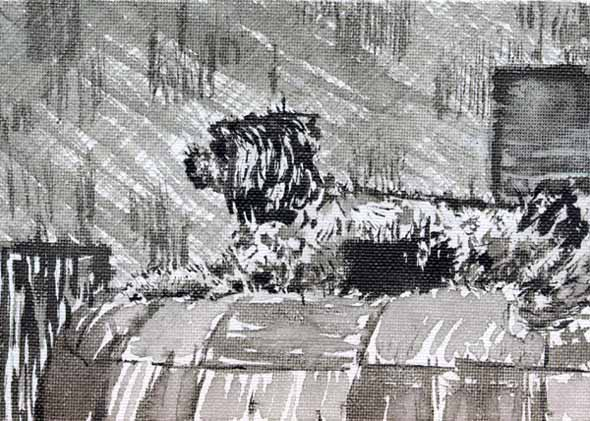
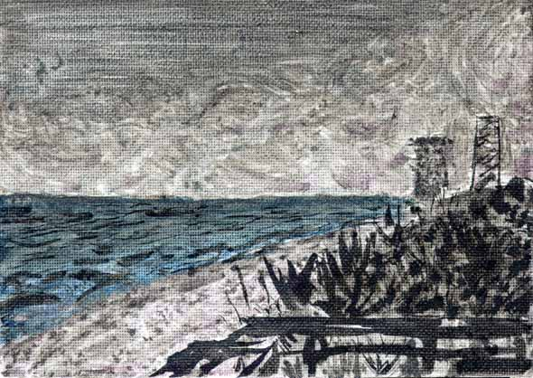
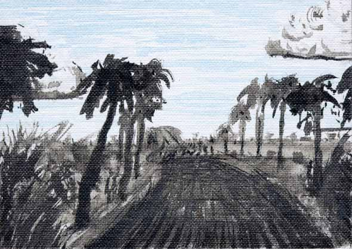

7"x5"
Ink Wash on canvas; Florida series.
Melbourne
Florida, Summer 1998
Displayed are a
selected 3 out of the set of 6. Individual pieces
were presented as gifts to friends and family.
.oOo.

"Dog" - Mick is Ron
Pollard's dog and was my best friend for the
summer. I rented a room from Ron during my
internship at Harris. Mick is an energetic
little Shih Tzu, and my second most favorite dog
in the whole wide world (following Molly).
.oOo.

"Central Florida Smoke Hits the
Coast" - There were very serious
fires in and around East Central Florida. Some
days smoke was thicker than the thickest fog, and
was everywhere. This is a view from the beach of
a bank of smoke pours off the mainland into the
Atlantic. Both the smoke and the Atlantic mix,
and both were mixed with the inks used in this
series.
.oOo.

"CoCo Road" - Just
north of Melbourne is Coco, and the causeway
there is a fun fun road to drive. Rimmed with
palm trees, gently bobbing up and down, left and
right, with the causeway just ahead and the ocean
beyond. The sky is a bright clear blue with
towering cumulus clouds. Ahhh, Florida weather.
|